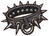
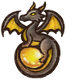

尖刺是一种增益效果。当被敌人用 武器击中时，每层造成1点伤害。（最高造成100%受到伤害的量）
武器击中时，每层造成1点伤害。（最高造成100%受到伤害的量）
自然护符和尖刺墙可以提高造成的最高尖刺伤害量并使其对 也造成尖刺伤害。例单个自然护符：最高造成150%伤害量的尖刺伤害，最高造成50%伤害量的尖刺伤害。
也造成尖刺伤害。例单个自然护符：最高造成150%伤害量的尖刺伤害，最高造成50%伤害量的尖刺伤害。
与尖刺有关的物品
| 名称 | 效果 | 职业 | 稀有度 | 价格 | |
|---|---|---|---|---|---|
 |
刺猬 | * 每5s：造成10点 伤害（每层 伤害（每层 增加0.5点伤害）。 * 当生命值低于70%时：获得2层和25点 增加0.5点伤害）。 * 当生命值低于70%时：获得2层和25点 （单次触发）。 * 每有一个 （单次触发）。 * 每有一个 的宠物或食物，效果触发速度快 15%。 的宠物或食物，效果触发速度快 15%。 |
 游侠 游侠 |
史诗 | 6 |
 |
剧毒常春藤 | * 每有一个的 物品，就会获得5%的几率抵抗 减益效果。 * 获得时：向对手施加2层 物品，就会获得5%的几率抵抗 减益效果。 * 获得时：向对手施加2层 。 * 对手拥有至少18层时：受到的伤害+25%。 。 * 对手拥有至少18层时：受到的伤害+25%。 |
游侠 |
特别 | 10 |
 |
大得离谱的荆棘剑 | * 当你至少有5层 ：耐力消耗减少到2，冷却时间降低到2s。 * 击中对手：消耗3层 ：耐力消耗减少到2，冷却时间降低到2s。 * 击中对手：消耗3层 来获得6层 来获得6层 ，还会获得6层。 * 每有一层或，造成的伤害+2。 ，还会获得6层。 * 每有一层或，造成的伤害+2。 |
 冒险家 冒险家 |
神级 | 31 |
 |
大自然编年史：林木 | * 每2.5s：消耗1层来获得1点 和2层。 * 每有一个的魔法卷轴，此物品的触发速度快10%（的魔法卷轴算作2次）。 和2层。 * 每有一个的魔法卷轴，此物品的触发速度快10%（的魔法卷轴算作2次）。 |
 魔法师 魔法师 |
史诗 | 6 |
 |
尖刺墙 | * 基础耐力恢复-30%。 * 狂战士之怒持续时间加长2s。 * 对抗和攻击时的反弹伤害上限+30%。 * 被攻击时（/）：有30%的几率抵挡15点伤害，还会移除对手0.3点耐力，并获得3层（最高12）。 |
 狂战士 狂战士 |
神级 | 14 |
 |
尖刺法杖 | 攻击时：消耗3点 来获得2层，并在狂战士之怒期间获得2层。 来获得2层，并在狂战士之怒期间获得2层。 |
狂战士 |
传说 | 16 |
 |
尖刺爆发 | * 每6.5s：眩晕对手0.3s并获得2层（最高5次）。 * 每有1层，触发快5%。 |
 通用 通用 |
特别 | 5 |
 |
尖刺盾牌 | 被攻击时（）：有30%的几率抵挡9点伤害，移除对手0.3点耐力值，并获得1层（最高5层）。 |
通用 |
罕见 | 8 |
|  | 尖刺项圈 | * 狂战士之怒持续时间加长2s。 * 进入狂战士之怒时：获得1层。 |
狂战士 |
传说 | 6 |
 |
尖牙弓 | * 战斗开始时：获得4层。 * 的武器击中对手时：消耗1层，尖牙弓下次攻击造成的伤害+9。 |
游侠 |
传说 | 11 |
 |
尖牙短弓 | 击中对手时： 50%的几率获得1层。 |
游侠 |
罕见 | 8 |
 |
强力硬化魔药 | 当你的至少有45点时：消耗此魔药，转换15点生命值为35点，并在4s内获得2点。 |
通用 |
传说 | 8 |
 |
护甲勇敢狼崽 | * 每有1个的宠物，造成的伤害+2。 * 狼崽的攻击不会触发护盾类物品的效果，也不会触发。 |
狂战士 |
神级 | 7 |
 |
攻击之爪 | * 每有一层，攻击触发快5%。 * 每击中对手4次，获得1层。 |
通用 |
史诗 | 8 |
 |
海象尖牙 | 战斗开始时：获得1层。 |
通用 |
普通 | 4 |
 |
烈火之鞭 | 击中对手时：消耗1层来获得4层 并造成+8点伤害。 并造成+8点伤害。 |
 火焰魔导士 火焰魔导士 |
传说 | 10 |
 |
石制护甲 | * 耐力值消耗增加20%。 * 战斗开始时：获得110点。 * 每4s：移除对手1层和2层。 * 当生命值低于50%时：获得等同于40%点损失生命值的（单次触发）。 |
通用 |
传说 | 13 |
 |
终极升腾 | * 10s后：每有一个…… * 的物品：获得1点和2层。 * 的 物品：获得15点，向对手施加1层 物品：获得15点，向对手施加1层 。 * 的 。 * 的 物品：获得3层。 * 的 物品：获得3层。 * 的 物品：偷取1层增益效果。 * 每有一个的魔法卷轴，此物品触发速度快50%。 物品：偷取1层增益效果。 * 每有一个的魔法卷轴，此物品触发速度快50%。 |
魔法师 |
特别 | 5 |
 |
自然护符 | * 5秒后：触发的宠物效果，并获得4层。 * 和触发的最高伤害 + 50%。 |
通用 |
罕见 | 6 |
 |
荆棘之花 | * 击中对手时：获得1层。有60%的几率获得1层。 * 每获得1层：获得11点最大生命值。 * 每有一层，此武器造成+1伤害。 |
通用 |
神级 | 14 |
 |
荆棘之鞭 | * 击中对手时：获得一层。 * 每层造成+1额外伤害。 |
通用 |
史诗 | 8 |
 |
菠萝 | 每3.3s：获得1层并恢复4点生命值。 |
通用 |
传说 | 6 |
 |
血棘 | * 击中对手时：消耗1层以获得1层和1层。 * 每有一层或，伤害+1。 |
通用 |
神级 | 15 |
 |
超级刺猬 | * 每5s：造成10点伤害，且每有1层再+0.5伤害，且每有一层再+1点伤害。 * 当生命值低于70%时：获得3层，还有3层和35点（单次触发）。 * 每有一个的宠物或食物，触发速度快15%。 |
游侠 |
神级 | 12 |
 |
阿拉丁神灯 | * 每1.6s：根据你现有最少的项，获得1点或1层或1点。 * 消耗7点，7点，7层，7点和27点生命值：使的武器+27点伤害（单次触发）。 |
通用 |
神级 | 11 |
 |
黑桃A | * 翻开时：你的下一次攻击为暴击。 * 如果之前翻开的卡牌数量是奇数，获得2点和3层。 |
 收割者 收割者 |
罕见 | 3 |
 |
黑色城堡 | * 吃掉其他棋子时：获得3层。 * 被吃掉时：增加35%暴击几率，持续3s。 |
魔法师 |
史诗 | 5 |
|  | 龙铭珠 | * 层数达到15时：你之后3次攻击必为暴击。 * 每3.8s：移除对手1层，每移除对手一层获得1层。 |
火焰魔导士 |
史诗 | 8 |
| v · d · e 游戏机制 |
|---|
| 物品栏和商店 |
| 战斗 |
| 增益效果 |
| 减益效果 |
| 其他 |